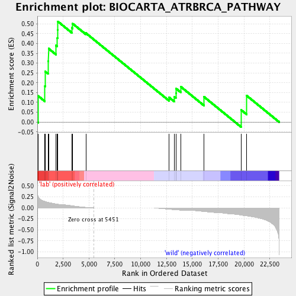

| | | Dataset | MLN_gene_exp_gsea_gene_exp_gsea.MLN_meta.cls#lab_versus_wild |
| Phenotype | MLN_meta.cls#lab_versus_wild |
| Upregulated in class | lab |
| GeneSet | BIOCARTA_ATRBRCA_PATHWAY |
| Enrichment Score (ES) | 0.5123027 |
| Normalized Enrichment Score (NES) | 1.1414486 |
| Nominal p-value | 0.30332682 |
| FDR q-value | 1.0 |
| FWER p-Value | 0.967 |
Table: GSEA Results Summary

Fig 1: Enrichment plot: BIOCARTA_ATRBRCA_PATHWAY
Profile of the Running ES Score & Positions of GeneSet Members on the Rank Ordered List
| PROBE | DESCRIPTION
(from dataset) | GENE SYMBOL | GENE_TITLE | RANK IN GENE LIST | RANK METRIC SCORE | RUNNING ES | CORE ENRICHMENT | | 1 | CHEK2 | NA | | | 72 | 0.261 | 0.1332 | Yes |
| 2 | RAD1 | NA | | | 735 | 0.147 | 0.1817 | Yes |
| 3 | NBN | NA | | | 748 | 0.146 | 0.2575 | Yes |
| 4 | FANCD2 | NA | | | 1051 | 0.126 | 0.3105 | Yes |
| 5 | RAD51 | NA | | | 1082 | 0.125 | 0.3742 | Yes |
| 6 | HUS1 | NA | | | 1812 | 0.089 | 0.3894 | Yes |
| 7 | RAD50 | NA | | | 1935 | 0.083 | 0.4277 | Yes |
| 8 | ATR | NA | | | 1962 | 0.083 | 0.4698 | Yes |
| 9 | RAD17 | NA | | | 1973 | 0.082 | 0.5123 | Yes |
| 10 | BRCA1 | NA | | | 3341 | 0.049 | 0.4797 | No |
| 11 | FANCG | NA | | | 3422 | 0.047 | 0.5007 | No |
| 12 | RAD9A | NA | | | 4694 | 0.012 | 0.4528 | No |
| 13 | CHEK1 | NA | | | 12766 | -0.033 | 0.1251 | No |
| 14 | BRCA2 | NA | | | 13261 | -0.045 | 0.1274 | No |
| 15 | FANCC | NA | | | 13410 | -0.048 | 0.1462 | No |
| 16 | FANCF | NA | | | 13421 | -0.048 | 0.1710 | No |
| 17 | FANCE | NA | | | 13886 | -0.055 | 0.1800 | No |
| 18 | MRE11A | NA | | | 16150 | -0.085 | 0.1278 | No |
| 19 | ATM | NA | | | 19725 | -0.167 | 0.0621 | No |
| 20 | TREX1 | NA | | | 20269 | -0.183 | 0.1345 | No |
Table: GSEA details [plain text format]
Fig 2: BIOCARTA_ATRBRCA_PATHWAY
Blue-Pink O' Gram in the Space of the Analyzed GeneSet
Fig 3: BIOCARTA_ATRBRCA_PATHWAY: Random ES distribution
Gene set null distribution of ES for BIOCARTA_ATRBRCA_PATHWAY